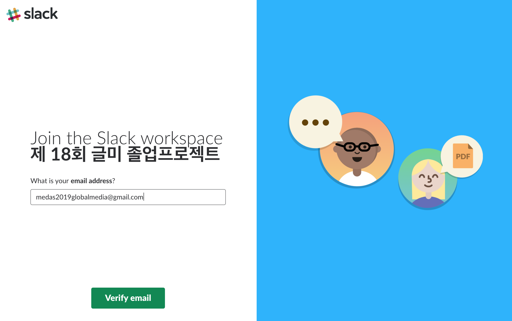

팀빌딩식에서 공지를 드렸던 것과 같이
앞으로 1년간, 졸업프로젝트 전체 과정에서 Slack(슬랙)을 이용합니다
슬랙을 사용함으로 얻을 수 있는 장점은 다음과 같습니다
1.다른 서비스와 분리된 독립적인 환경 => 네이버 카페, 카카오톡등은 다른 알림이 존재하는 반면,
완전히 독립되어 필요한 알림만 꼭 받을 수 있습니다
2.실시간으로 연락가능한 카카오톡의 이점과
각 게시판별로 따로 이야기할 수 있는 카페류 페이지의 이점을 모두 가지고있습니다
3.슬랙을 사용함으로 얻을 수 있는 장점은 다음과 같습니다
